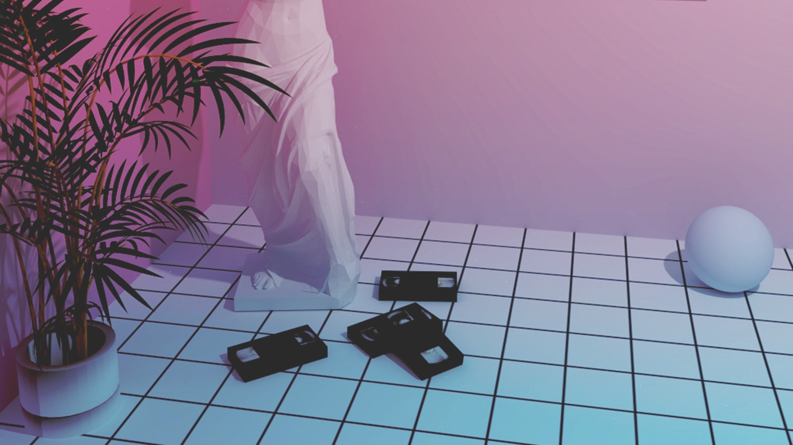

Sedang Belajar Pemrograman Web
Kata estetika sendiri berakar dari bahasa latin “aestheticus” atau bahasa Yunani “aestheticos” yang merupakan kata yang bersumber dari istilah “aishte” yang memiliki makna merasa.
Kata estetika sendiri berakar dari bahasa latin “aestheticus” atau bahasa Yunani “aestheticos” yang merupakan kata yang bersumber dari istilah “aishte” yang memiliki makna merasa.
Kata estetika sendiri berakar dari bahasa latin “aestheticus” atau bahasa Yunani “aestheticos” yang merupakan kata yang bersumber dari istilah “aishte” yang memiliki makna merasa.
We are made of all those who have built and broken us -atticus-